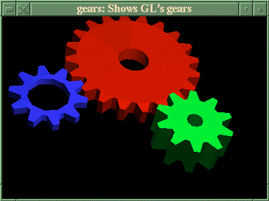
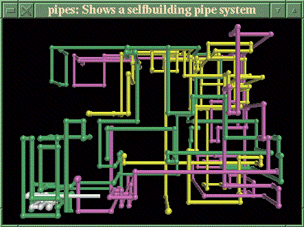
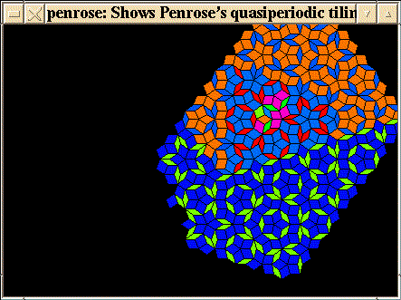
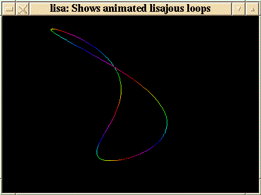

![[ TABLE OF CONTENTS ]](../gx/indexnew.gif)
![[ FRONT PAGE ]](../gx/homenew.gif)


Several years ago, in the dark backward and abysm of (computing) time, Patrick J. Naughton collected several screen hacks and released them to other Unix users as a package called Xlock. A screen hack is a clever bit of programming which will display a changing image to the computer screen. People felt vaguely guilty about wasting time writing these little programs and gazing at the hypnotic, often geometrical patterns which they produced, and thus the concept of the screensaver was born. The rationale was that if a screen statically displayed text (or whatever) for a long period of time, a faint imprint of the display would "burn in" and would thereafter be faintly visible on the monitor screen. This actually did happen with early monitors, but modern monitors are nearly impervious to the phenomenon (i.e, it would take months). Nonetheless, the screensaver has survived, which is evidence that its appeal ranges beyond the merely prudent and practical.
David A. Bagley has become the current maintainer of Xlock, which is now known as Xlockmore, due to the many new modes included in the package.
Xlockmore can be thought of as a museum of screen hacks. The old Xlock modes are all still included, and some of them (at least to this jaded observer) aren't particularly impressive. On the other hand, there is a certain haiku-like charm to certain of the older modes. The pyro mode, for example, manages to convey something of the appeal of a fireworks display with nothing more than parabolically arcing dots which explode just over the peak of the trajectory.
Over the years as computers have become more powerful the complexity of the added modes has increased. Some of the newer ones are CPU-intensive and need a fast processor to run well.
David Bagley must be receiving contributed modes and bugfixes quite often, as he releases a new version every couple of months. Some of the newer modes are amazing to behold and take full advantage of modern graphics hardware.
I'm sure most of you have seen some of the OpenGL screensavers which many Win95 and NT users run. Even though many of them advertise one product or another, they tend to be visually compelling, with a three-dimensional and shaded appearance. In the latest Xlockmore package the option is offered to compile in several flashy new modes based on the Mesa OpenGL libraries.
Gears is an impressive Mesa mode: nicely shaded gears
turning against each other while the group slowly rotates.

The Pipes mode, displaying a self-building network of 3D pipes, is
also OpenGL-dependent. Marcelo F. Vianna came up with this one. Luckily most
Linux distributions these days have prebuilt Mesa packages available.

Ed Mackey contributed the Superquadrics mode, which displays esoteric mathematical solids morphing from one to another. He also is responsible for porting the Gears mode to Xlockmore.
Jeremie Petit, a French programmer, has written one of the most intriguing "starfield" modes I've ever seen. It's called Bouboule, and if you can imagine an ellipsoidal aggregation of stars... I really can't describe this one well, and a screenshot wouldn't do it justice. It's appeal is in part due to the stately movement of the star-cloud, somehow reminiscent of a carnival Tilt-A-Whirl ride in slow motion.
Another excellent mode which doesn't show well in a screenshot is Ifs. If you have never seen Iterated Functions Systems images (Fractint and Dick Oliver's Fractal Graphics program display them well) this mode would be a good introduction. IFS fractals seem to have two poles: at one extreme they are severely geometrical (Sierpinski's pyramid comes to mind) and at the other, organic-looking forms which resemble ferns, shells, and foliage predominate. The Ifs mode induces a cloud of particles to fluidly mutate between various of these IFS forms. The result (at least to my mathematically-inclined eyes) is often spectacular.
The upcoming Gimp version 1.0 will include a nicely-implemented plug-in called IFS-Explorer, which enables the creation of IFS forms in an interactive fashion.
Massimino Pascal, another Frenchman, wrote Ifs, and as if that wasn't enough, he has contributed another math-oriented mode called Strange. This one recruits the ubiquitous cloud of particles and convinces them to display mutating strange attractors. They are strange to behold, diaphanous sheets and ribbons of interstellar dust (or is that subatomic dust?) twisting and folding into marvellously intricate structures which almost look familiar.
The eminent British physicist Roger Penrose invented (discovered?) a peculiar method of tiling a plane in a non-repeating manner many years ago. The Penrose tiling (as it came to be known) was popularized by several articles by Martin Gardner in his Mathematical Recreations column, which appeared in Scientific American magazine in the late sixties and seventies. The tessellation or tiling is based on a rhombus with angles of 72 and 108 degrees. The resulting pattern at first glance seems symmetrical, but looking closer you will notice that it varies from region to region. Timo Korvola wrote the xlock mode, and it can render two of the several variations of the tiling.
An aside: recently Roger Penrose noticed the Penrose tiling embossed into
the surface of a roll of toilet paper, of all things. He previously had patented the
pattern, thinking that it might be profitably implemented in a puzzle game, so
now he has sued the manufacturer. It'll be an interesting and novel trial, I imagine.

Another mathematical mode, very spare but elegant and pleasing to
regard, is Caleb Cullen's Lisa mode. This one displays an animated lissajous
loop which bends and writhes in a remarkably three-dimensional manner.
As with so many of these modes, a still shot doesn't really do it justice.

The modes I've described are just a sampling of newer ones; the Xlockmore package contains many others, and more are continually added.
Xlockmore is included with most Linux distributions and tends to be taken for granted; the default configuration files for Fvwm and Afterstep (which most users use as templates for customization) include root-menu items for several of the older modes. I'd like to encourage anyone who has used Xlockmore to take the time to download the current version (4.02 as I write this). Not only because of the newer screensaving modes, but also because compiling it from source allows you to easily tailor Xlockmore to your tastes.
Here is the procedure I follow when compiling an Xlockmore release: first I'll try to compile it "as is", just running the configure script and then compiling it. If by chance it can't find, say, your X11 or Xpm libs, you may have to point the Makefile in the right direction by editing in the correct paths.
If you are unfamiliar with Xlockmore, now is a good time to try out all of
the modes. The quickest way to run through all of them is to run Xlock from
an xterm window, with the following command line:
xlock -inwindow -mode [name of mode]
A window will open up with the mode displayed. Dismiss it with a left- mouse-button click, press the up-arrow key to redisplay the command, and edit the command for the next mode. Keep track of the ones you would rather not keep, perhaps in a small editor window. There are three files which need to be edited: the Makefile, mode.c, and mode.h. Just edit out references to the unwanted modes (you can grep for the mode names to find the line numbers). Recompile, and you will have a smaller executable with only your selected modes included. You also will now be able to run xlock with the -fullrandom switch, which will display a random mode selected from the ones you chose to keep.
Something to consider -- since at this point you have a compiled source tree there on your hard disk, you might want to take a look at the source files for some of the modes. In general, the *.c files for the various modes are unusually well commented. If you are curious about the origin or author of a mode, you'll find it in the source. There are often parameters that can be changed, if you like to experiment, and some files can be altered to suit your processor speed. A few modes even have entire commented-out sections which can be uncommented and thus enabled. It may not work, but if you save the original xlock executable before you start fooling with the source you can always revert to it. An advantage of keeping a built source tree while experimenting is that if you modify a single C file, recompilation is quick as only the modified file is recompiled. After all, one of the oft-touted virtues of Linux (and free software in general) is that source is available. Why not take advantage of the fact?
The source archive for Xlockmore-4.02 can be obtained from ftp.x.org or from Sunsite.